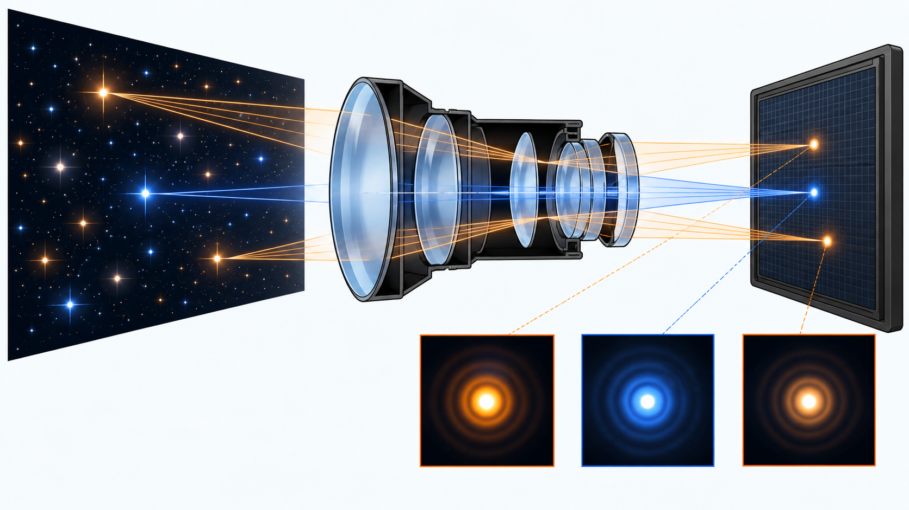
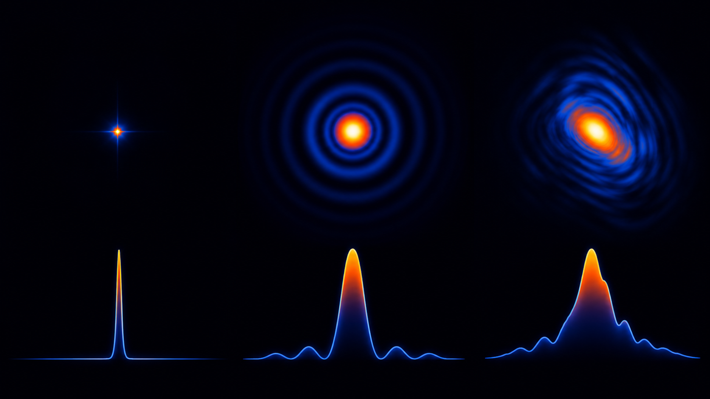
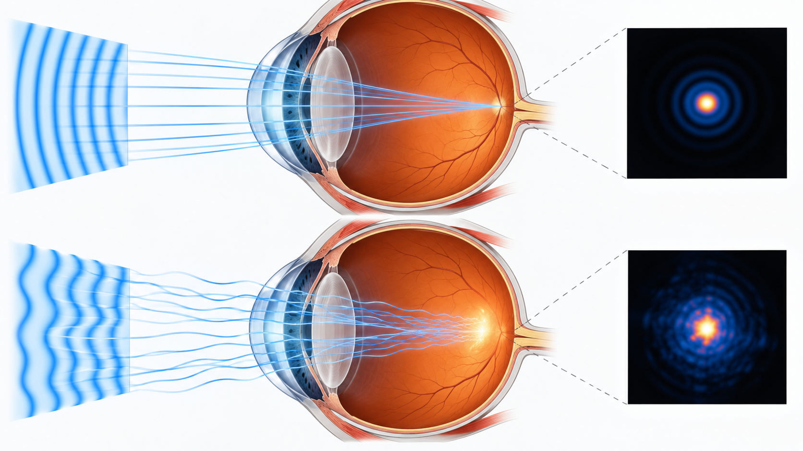

Livello intuitivo: Immagina un puntino dipinto con un pennello leggermente largo: il sistema ottico trasforma ogni punto in una macchia. Questa impronta luminosa è la PSF.
Per essere maggiormente rigorosi: La figura di Airy è un esempio di PSF ideale. Nell’occhio reale intervengono anche aberrazioni, defocus, scattering e film lacrimale; non basta sostituire ogni PSF con Airy.
Da un punto-oggetto a una macchia-immagine
Un sistema ottico ideale secondo l’ottica geometrica trasformerebbe un punto-oggetto in un punto-immagine. Un sistema reale produce invece una distribuzione luminosa estesa. Questa risposta a una sorgente puntiforme è la Point Spread Function, abbreviata PSF.
La PSF concentra in un’unica immagine gli effetti di diffrazione, aberrazioni, defocus, scattering, movimento e risposta del rivelatore. Una PSF stretta indica che l’energia proveniente da un punto resta concentrata; una PSF larga o asimmetrica segnala perdita di dettaglio.
Sistema lineare e invariante
Se il sistema può essere approssimato come lineare e invariante per traslazione, l’immagine è la convoluzione tra l’oggetto e la PSF :
Cosa Vuol Dire?
Livello intuitivo: L’immagine si ottiene distribuendo ciascun punto dell’oggetto secondo la sua impronta luminosa e sommando i contributi.
Una PSF larga mescola punti vicini e perde dettaglio. Conoscere la PSF aiuta una ricostruzione, ma non elimina automaticamente rumore e informazioni perdute.
Per essere maggiormente rigorosi: L’asterisco significa convoluzione, non moltiplicazione punto per punto. Per immagini d’intensità: modello lineare e invariante e illuminazione incoerente.
Ogni punto dell’oggetto contribuisce quindi all’immagine con una copia traslata della PSF. Questa relazione permette anche tecniche di deconvoluzione, purché la PSF sia nota o stimata e il rumore venga gestito.

PSF: la figura di Airy come primo modello
Livello intuitivo: Un punto diventa una macchia centrale luminosa con anelli più deboli. Il disco di Airy è solo la zona centrale, fino al primo anello scuro.
Livello intuitivo: Il raggio della macchia centrale è circa 1,22 volte la lunghezza d’onda per la focale, diviso il diametro dell’apertura.
A focale fissa, raddoppiare il diametro dimezza il raggio; raddoppiare la lunghezza d’onda lo raddoppia. Per , e , : il diametro centrale è circa .
Per essere maggiormente rigorosi: Apertura circolare libera e uniformemente illuminata, luce monocromatica, assenza di aberrazioni, piano a fuoco e regime paraxiale in aria. Questa formula dà la scala della figura, non l’intero profilo e non la PSF di qualsiasi occhio. , f e D devono essere in unità coerenti.

PSF limitata dalla diffrazione: dettaglio matematico
Per un’apertura circolare ideale, la PSF d’intensità è la figura di Airy:
Cosa Vuol Dire?
Livello intuitivo: La formula descrive come la luminosità diminuisce dal centro e forma anelli attorno alla macchia di Airy.
Il centro è intenso; i primi minimi separano anelli deboli. Cambiare D o cambia la scala del disegno, non questa forma ideale normalizzata.
Per essere maggiormente rigorosi: Apertura circolare libera e uniforme, monocromatica, priva di aberrazioni, a fuoco. nel regime paraxiale in aria; è Bessel; al centro il limite del rapporto è 1.
dove è la funzione di Bessel del primo ordine e dipende da apertura, lunghezza d’onda e distanza radiale.
PSF dell’occhio
Nell’occhio, la PSF cambia con diametro pupillare, accomodazione, film lacrimale e aberrazioni. Una pupilla piccola riduce molte aberrazioni ma aumenta la diffrazione; una pupilla grande riduce la diffrazione ma rende più importanti le aberrazioni. La PSF retinica nasce dal loro equilibrio.
Un sensore di Shack–Hartmann misura il fronte d’onda emergente dall’occhio. Dalle aberrazioni si può stimare una PSF, ma il risultato descrive la qualità ottica e non, da solo, l’intera percezione visiva.
